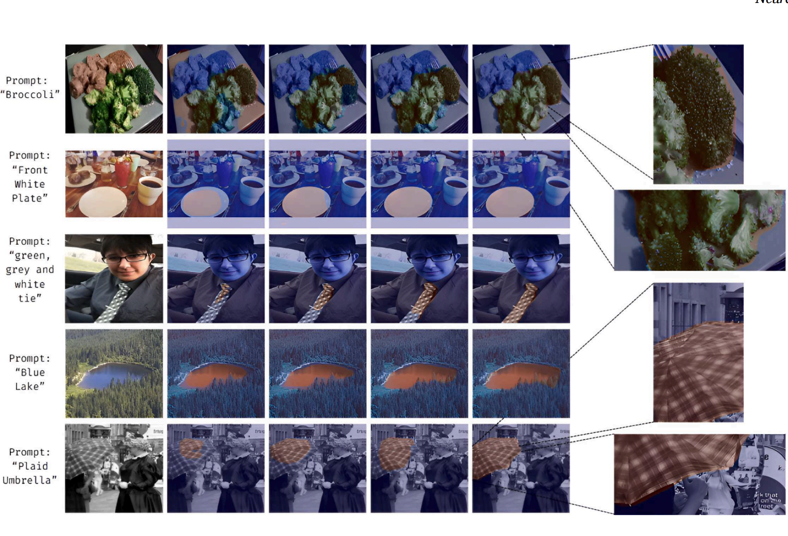

SegVLM · Research figureReferring image segmentation
SegVLM: Deformable Attentive Visual Enhancement for Referring Image Segmentation Using Vision-Language Model
TL;DR Give it an image and a phrase like “black baseball cap” and it returns a pixel-accurate mask — sharpening visual features with deformable convolutions and SE recalibration before they meet the language, for +10.3 mIoU over CRIS on PhraseCut.